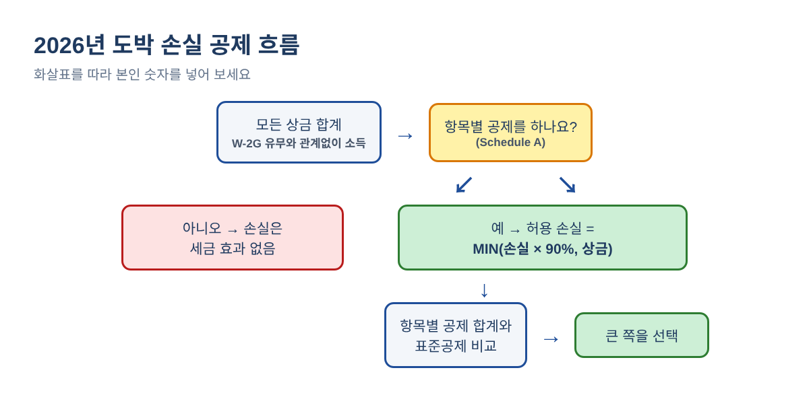
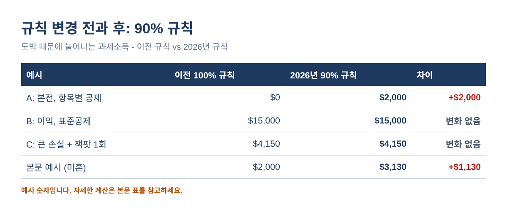
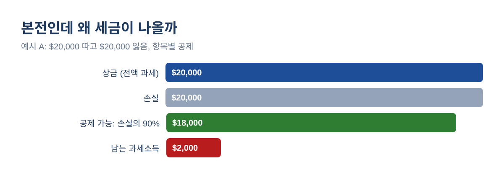
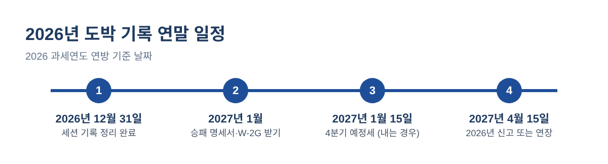

2026년 도박 손실 공제: 새 90% 규칙 계산법 (엑셀 공식과 예시 3가지)
지금까지 취미로 카지노에 가는 분들의 규칙은 간단했습니다. 항목별 공제(itemize)를 하면 도박 손실을 상금만큼 공제할 수 있어서, 본전이면 도박 때문에 낼 세금도 없었습니다. 그런데 2026 과세연도부터는 다릅니다. 2025년에 통과된 연방 세법으로 손실 공제가 손실의 90%까지로 줄었고, 여전히 상금보다 많이 공제할 수는 없습니다.
라스베이거스나 인디언 카지노에 자주 가시거나, 포커·스포츠 베팅 앱·복권을 즐기시는 분이라면 꼭 알아야 할 변화입니다. 몇백 달러 땄을 뿐인데 몇천 달러에 세금이 붙을 수 있기 때문입니다. 이 글에서는 2026년 규칙이 정확히 어떻게 계산되는지, 엑셀이나 구글 시트에 그대로 입력할 수 있는 공식, 예시 3가지, 그리고 신고 전에 챙길 연말 체크리스트를 정리했습니다.
이런 분께: 사업이 아니라 취미로 도박을 하는 미국 납세자로서, 2026년 상금과 손실이 세금에 어떤 영향을 주는지 2027년 4월 전에 미리 알고 싶은 분.
1단계: 규칙 세 가지부터
- 모든 상금은 소득입니다. IRS는 W-2G에 나오지 않은 상금까지 포함해 모든 도박 상금을 신고서(Schedule 1)에 신고하라고 합니다.
- 손실은 항목별 공제를 할 때만 인정됩니다. Schedule A로 항목별 공제를 하고, 상금·손실 기록을 갖고 있어야 공제할 수 있습니다. 표준공제를 받으면 손실은 세금에 전혀 도움이 되지 않습니다.
- 2026년부터: 90%, 그리고 상금 한도. 2025년 12월 31일 이후 시작하는 과세연도부터 공제는 도박 손실의 90%로 제한되고, 도박 상금을 넘을 수 없습니다. 공식으로 쓰면 허용 손실 = MIN(0.9 × 손실, 상금)입니다.

2단계: 1년 상금과 손실 합계 내기
방문하거나 베팅한 날마다 한 줄씩(이것을 '세션'이라고 합니다) 들어간 돈과 나올 때 가진 돈을 적습니다. 돈을 따고 끝난 날은 상금, 잃고 끝난 날은 손실입니다. D열에 들어간 돈, E열에 나온 돈을 적었다면:
- 순결과 (F2): =E2-D2
- 상금 (G2): =MAX(F2,0) 손실 (H2): =MAX(-F2,0)
- 연간 합계: 상금 =SUM(G2:G200), 손실 =SUM(H2:H200)
줄마다 증빙을 남겨 두세요. 카지노 승패 명세서(win/loss statement), 베팅 앱 연간 명세서, 티켓·베팅 전표, 은행·ATM 기록이 좋습니다. IRS는 정확한 일지나 비슷한 기록을 남기고 영수증·티켓·명세서로 금액을 보여 줄 수 있어야 한다고 합니다.
3단계: 2026년 방식으로 계산하기
전체 예시입니다. B1–B4에 아래 값을 넣습니다 (예시 숫자이며 실제 자료가 아닙니다).
| 입력값 | 예시 |
|---|---|
| 신고 유형 | 미혼(Single) |
| 도박 상금 (B1) | $12,200 |
| 도박 손실 (B2) | $11,300 |
| 도박 외 항목별 공제 (B3) | $15,000 |
| 2026년 표준공제 (B4) | $16,100 |
그리고 B5–B11에 다음 공식을 넣습니다.
| 칸 / 단계 | 공식 | 결과 |
|---|---|---|
| B5: 손실의 90% | =0.9*B2 | $10,170 |
| B6: 허용 손실 (상금 한도) | =MIN(0.9*B2,B1) | $10,170 |
| B7: 도박이 있을 때 공제액 | =MAX(B4,B3+B6) | $25,170 |
| B8: 도박이 없을 때 공제액 | =MAX(B4,B3) | $16,100 |
| B9: 손실로 늘어난 공제 | =B7-B8 | $9,070 |
| B10: 도박으로 늘어난 과세소득 | =B1-B9 | $3,130 |
| B11: 이전 100% 규칙이라면 | =B1-(MAX(B4,B3+MIN(B2,B1))-B8) | $2,000 |
핵심은 B7–B9입니다. 손실은 항목별 공제 합계가 '어차피 받을 공제액'보다 더 커지는 만큼만 도움이 됩니다. 이 예시에서 실제로는 $900을 벌었지만, 도박 때문에 늘어나는 과세소득은 $3,130입니다. 이전 100% 규칙이었다면 $2,000이었는데, 그래도 $900보다 큰 이유는 손실 일부가 표준공제까지의 차이를 메우는 데 쓰이기 때문입니다.
2026년 표준공제: 미혼·부부 개별 신고 $16,100, 부부 합산 $32,200, 세대주 $24,150 (IRS Publication 505, 2026년판). 65세 이상이거나 시각장애가 있으면 추가 금액을 직접 더하세요.
4단계: 자주 보는 세 가지 경우 비교
같은 공식이라도 다른 공제가 얼마냐에 따라 결과가 크게 달라집니다. 아래 숫자는 모두 예시입니다.
| A: 본전인 단골 | B: 이익, 표준공제 | C: 큰 손실 + 잭팟 1회 | |
|---|---|---|---|
| 신고 유형 | 미혼 | 부부 합산 | 세대주 |
| 상금 | $20,000 | $15,000 | $8,000 |
| 손실 | $20,000 | $6,000 | $25,000 |
| 도박 외 항목별 공제 | $18,000 | $12,000 | $20,000 |
| 표준공제 (2026) | $16,100 | $32,200 | $24,150 |
| 허용 손실 (90%, 상금 한도) | $18,000 | $5,400 | $8,000 |
| 유리한 선택 | 항목별 공제 | 표준공제 | 항목별 공제 |
| 늘어난 과세소득 (2026) | $2,000 | $15,000 | $4,150 |
| 이전 100% 규칙이라면 | $0 | $15,000 | $4,150 |
| 실제 손익 | $0 | +$9,000 | −$17,000 |

- A — 본전인 단골: $20,000을 따고 $20,000을 잃었습니다. 손실은 $18,000만 인정되어, 번 돈이 없는데도 $2,000이 과세소득이 됩니다.
- B — 이익, 표준공제: 이 경우 90% 규칙은 상관이 없습니다. 항목별 공제($17,400)가 표준공제 $32,200보다 작아서 상금 $15,000 전부에 세금이 붙습니다.
- C — 큰 손실 + 잭팟 1회: 손실이 상금보다 훨씬 커서 '상금 한도'($8,000)가 먼저 걸리므로 90% 규칙은 결과를 바꾸지 않습니다.

5단계: W-2G와 기록 맞춰 보기
W-2G는 지급처가 보고해야 했던 상금만 보여 줍니다. 2026년 지급분의 W-2G 최소 보고 기준은 $2,000이고, 이후에는 물가에 맞춰 조정됩니다. 일부 베팅은 상금에서 베팅액을 뺀 금액이 $5,000을 넘으면(스포츠·경마 등은 베팅액의 300배 이상일 때) 연방세 24%를 원천징수합니다. 슬롯·빙고·키노에는 이 정규 원천징수가 적용되지 않습니다.
간단한 확인: 기록부의 상금 합계가 W-2G Box 1 합계보다 작으면 안 됩니다. 시트에서는 =IF(SUM(W2G_Box1)>Log_Winnings,"Check","OK")처럼 확인합니다. "Check"가 나오면 빠진 세션이 있을 가능성이 큽니다.
자주 하는 실수
- 순이익만 신고. 상금은 소득으로, 손실은 Schedule A로 따로 신고합니다. 소득 칸에서 서로 빼지 않습니다.
- W-2G 금액만 신고. 양식이 없는 작은 상금도 모두 소득입니다.
- 표준공제인데 손실이 도움 된다고 생각. 도움이 되지 않습니다.
- 2026년에 100% 규칙 적용. 2026년에는 손실의 90%만 인정됩니다. 공제를 100%로 되돌리는 법안이 2026년 9월 16일 하원 위원회를 통과했지만, 2026년 11월 현재 법이 아닙니다. 신고 전에 다시 확인하세요.
- 증빙 없음. 몇 달 뒤에 기억으로 쓴 일지만으로는 약합니다.
- 스프레드시트에 SSN·계좌번호 입력. 기록부에는 필요 없습니다. 종이 양식을 안전하게 보관하세요.
연말 일정

도박으로 소득이 크게 늘고 예정세를 내고 계신다면, 2026년 4분기 예정세 납부일은 2027년 1월 15일입니다. 2026년 신고 마감은 2027년 4월 15일(또는 연장 신청)입니다. 주마다 도박 손실 규칙이 다를 수 있으니 주 세무국에서 확인하세요.
자주 묻는 질문
2026년에 본전이었는데 세금을 내야 하나요? 그럴 수 있습니다. 항목별 공제를 하면 손실의 10%는 공제되지 않고, 표준공제를 받으면 상금 전부가 과세됩니다.
손실을 상금보다 많이 공제할 수 있나요? 아니요. 공제는 상금을 넘을 수 없고, 취미로 하는 분의 남는 손실은 다른 해로 넘어가지 않습니다.
도박 기록부를 신고서와 함께 보내야 하나요? 보통은 아닙니다. IRS가 요청할 때를 대비해 세금 기록과 함께 보관하세요.
전문 도박사나 비거주자 방문객에게도 해당되나요? 두 경우 모두 다른 규칙이 적용됩니다. 이 글은 취미로 도박을 하는 미국 거주자 기준입니다.
짧은 체크리스트
- ☐ 세션마다 한 줄: 날짜, 장소, 종류, 들어간 돈, 나온 돈
- ☐ 상금·손실 연간 합계
- ☐ 허용 손실 = MIN(손실 × 90%, 상금)
- ☐ 항목별 공제 합계와 2026년 표준공제 비교
- ☐ W-2G 합계가 기록부 상금보다 크지 않은지
- ☐ 승패 명세서·앱 명세서·티켓 보관
- ☐ 신고 전 법 개정 여부 확인
이 글은 교육용 정보이며 세무·법률·재무 자문이 아닙니다. 예시는 가상의 숫자입니다. 세법은 바뀔 수 있고 개인 상황은 다를 수 있으니, 신고 전에 자격 있는 세무 전문가와 상의하세요.
위 과정을 그대로 해 주는 도박 상금·손실 기록부 2026 (Gambling Winnings & Losses Log 2026)은 아래 무료 키트 다운로드에서 가입 없이 무료로 받으실 수 있습니다(엑셀 + PDF 가이드).
출처
- IRS Internal Revenue Bulletin 2026-19 (REG-113229-25): limitation on wagering losses
- IRS Topic No. 419, Gambling income and losses
- IRS Instructions for Forms W-2G and 5754 (01/2026)
- IRS Publication 505 (2026), Tax Withholding and Estimated Tax (2026 standard deduction)
- IRS Form 1040-ES (2026), Estimated Tax for Individuals
무료 키트 다운로드
글에서 설명한 내용을 그대로 따라 할 수 있는 도구입니다. 가입 없이 바로 받으세요.
- 단계별 가이드 (PDF)Gambling_Tax_Guide_2026_EN_KR.pdf · 487 KB
- Excel 계산 도구 (.xlsx)Gambling_Winnings_Losses_Log_2026_EN_KR.xlsx · 35 KB
본인과 본인 사업에 무료로 쓰세요. 재판매·재배포는 하지 마세요. 일반 정보이며 세무·법률·회계 자문이 아닙니다. 숫자는 본인 자료로 꼭 확인하세요.